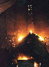

aku originated in Japan in the 16th century, where raku vessels were and still are used in the traditional tea ceremony. It is a low-fire technique, where bisqued work is quickly heated to red hot temperature and then taken out of the kiln and reduced in wood shavings, newspaper or a similar combustible material. Raku ware is decorated with low-fire glazes, which usually contain a lot of frit. The clays used for this firing technique contain a high percentage of grog, so the work will be able to withstand the high temperature fluctuations, although this doesn't mean that other clays can't be used.
Raku ware may be sculptural, like some of the work of William K. Turner, handbuilt such as with Mitzi Morris, or wheel-thrown, like the works of Jack & Cindy Philips or Dave & Boni Deal.
Angela Smiths work 'The Elements' shows an interesting approach. She has represented the four elements earth, air, fire and water in a raku context.
Raku, with its battle with the elements of fire and smoke is an exciting technique, one that is suited to communal firings, as many dedicated workshops can testify. While it is an age-old tradition from Japan, it has found many devout followers in western ceramic communities.
Next Page> Raku Update